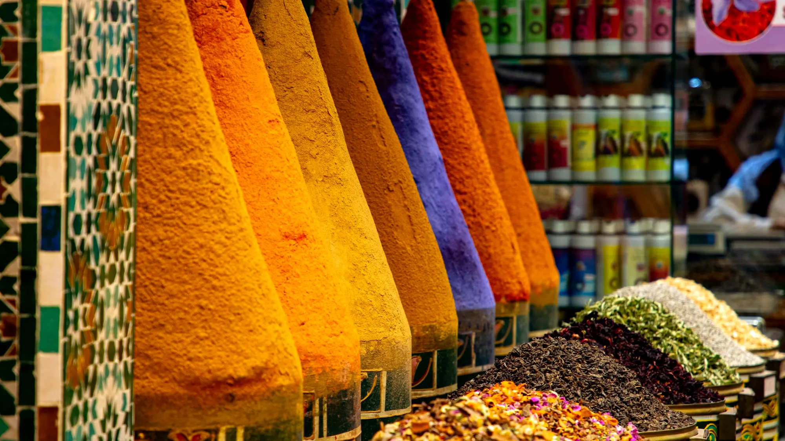

Koshari
Chawal, dal aur pasta, upar teekha tamatar aur karara pyaaz.
50 minMedium☆☆☆☆☆MediumServes 4
Vegan
View Recipe
20 recipes
Clay pots and bold red spice
Pick a dish, cook it tonight.
Chawal, dal aur pasta, upar teekha tamatar aur karara pyaaz.
50 minMedium☆☆☆☆☆MediumServes 4
Vegan
View RecipeWest Africa ka dhuandaar ek-bartan wala tamatar chawal.
50 minMedium☆☆☆☆☆MediumServes 4
VeganGluten-freeVegetarian version
View RecipeGaram masalon wali dheemi aanch ki Morocco ki sabziyan.
60 minMedium☆☆☆☆☆MildServes 4
VeganGluten-free
View RecipeGehre laal rang ki teekhi Ethiopian dal.
45 minEasy☆☆☆☆☆MediumServes 4
VeganGluten-free
View RecipeHalki masaledar sabzi ke saath phoola hua couscous.
35 minEasy☆☆☆☆☆MildServes 4
Vegan
View RecipeNimbu aur jeere wali garam fava beans, Egypt ke naashte ki jaan.
30 minEasy☆☆☆☆☆MediumServes 4
VeganGluten-free
View RecipeHare masale wale fava beans ke karare Egyptian falafel.
40 minMedium☆☆☆☆☆MildServes 4
VeganGluten-free
View RecipeTamatar, dal aur chane ka khushbudar Moroccan soup.
60 minMedium☆☆☆☆☆MildServes 4
VeganVegetarian version
View RecipeLehsun, jeera aur harissa wala garam chane ka shorba.
50 minEasy☆☆☆☆☆MildServes 4
Vegan
View RecipeKarari tali sabziyon ka masaledaar Tunisian mel, bina ande ke.
40 minMedium☆☆☆☆☆MildServes 4
VeganGluten-freeVegetarian version
View RecipeChatpati tamatar-mirch ki sauce mein chane, bina ande ke.
35 minEasy☆☆☆☆☆MildServes 4
Gluten-freeVegetarian version
View RecipePatta gobhi, aloo aur gajar ki haldi wali halki sabzi.
40 minEasy☆☆☆☆☆MildServes 4
VeganGluten-free
View RecipePise chane ke aate ki gaadhi, masaledaar Ethiopian dal.
35 minEasy☆☆☆☆☆MediumServes 4
VeganGluten-free
View RecipeKhatti injera par rangeen dal-sabzi ki bhari thali.
60 minHard☆☆☆☆☆MediumServes 4
Vegan
View RecipeMakka aur beans ka dheeme pakaya hua gharelu stew.
60 minEasy☆☆☆☆☆MildServes 4
VeganGluten-free
View RecipeHare patton ki sabzi aur beans, Kenya ki rozmarra ki thali.
30 minEasy☆☆☆☆☆MildServes 4
VeganGluten-free
View RecipeKaccha kela aur tamatar ka naram stew, bina maans ke.
50 minMedium☆☆☆☆☆MildServes 4
VeganGluten-freeVegetarian version
View RecipePalak aur lal mirch ki gaadhi, teekhi Nigerian sabzi.
40 minMedium☆☆☆☆☆MediumServes 4
VeganGluten-freeVegetarian version
View RecipeLal tel mein pakey lobia aur sunehre tale kele.
55 minEasy☆☆☆☆☆MediumServes 4
VeganGluten-free
View RecipeTeekhi sabziyon ka chatpata relish aur makke ka naram pap.
45 minEasy☆☆☆☆☆MediumServes 4
VeganGluten-free
View RecipeNothing matched. Try fewer filters.
The Sunday table